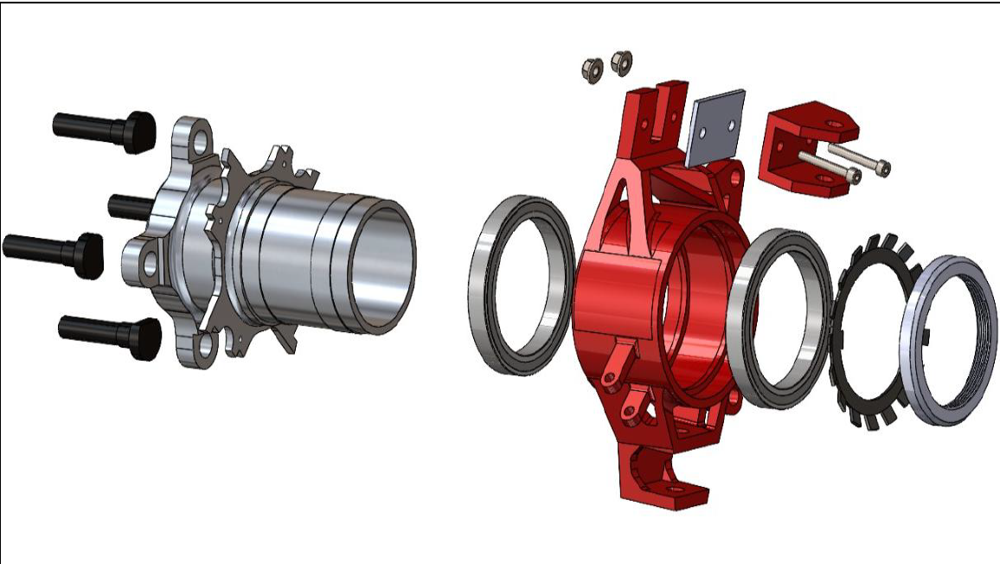
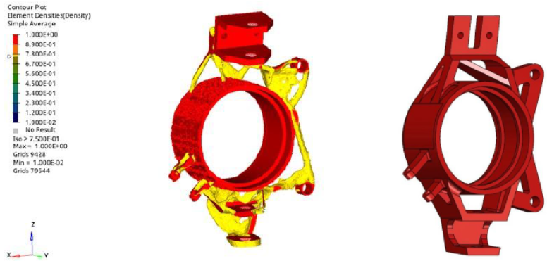
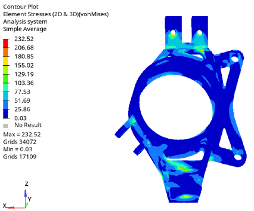
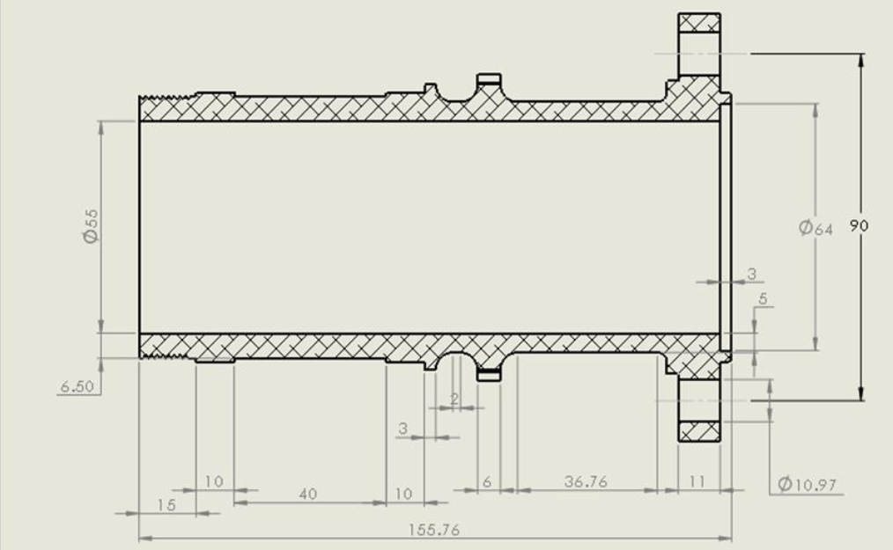
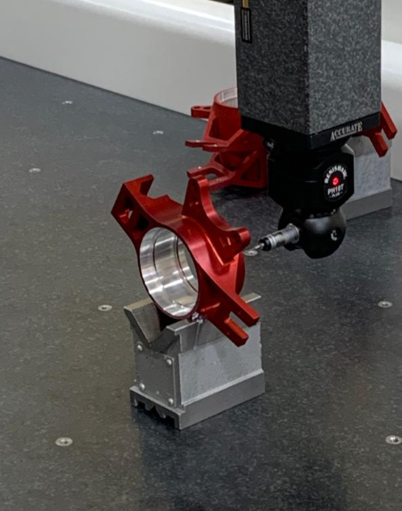

Lightweight, reliable wheel-end assembly
Develop a Formula Student front wheel-end balancing unsprung mass, stiffness, braking loads, bearing interfaces and suspension packaging, while addressing fatigue concerns found in previous competition uprights.

Load cases → manufacture → test
1. Load cases & materials
Converted vehicle mass, acceleration, wheelbase, track width and load transfer into component design loads, including a 1.3 g lateral case. Selected 7075-T6 aluminium for the hub and upright, retaining 300M steel inserts at critical bearing interfaces for durability.
2. Topology optimisation
Used HyperWorks topology optimisation to define the load paths, then reconstructed the result in SolidWorks as manufacturable geometry.
3. Structural FEA
Assessed the upright and hub in HyperWorks against the defined load cases: 232.5 MPa upright and 138.8 MPa hub peak von Mises stress.
4. Drawings, manufacture & test
Produced engineering drawings for the upright and hub, defining critical diameters, fits and interfaces. The upright was VMC-machined, dimensionally verified on a CMM, assembled and track-tested.


NDT-informed redesign
Carried out ultrasonic NDT crack inspection of previous competition uprights with an external partner. The findings identified where cracks could initiate and informed the redesign of the new upright.
Drawings & manufactured part


Steering, suspension & test support
Suspension & steering
Designed suspension and steering components in SolidWorks, considering geometry, packaging, interfaces and manufacturability.
Sensor mounting
Designed and 3D-printed PLA sensor mounts for vehicle data-acquisition hardware.
Build & troubleshooting
Supported vehicle build and troubleshooting across suspension and steering assemblies.